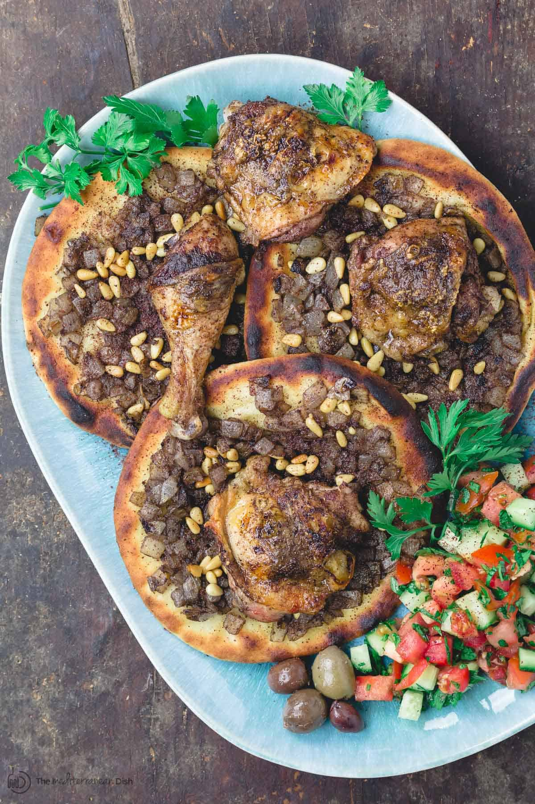

Musakhan
A Signature Palestinian Dish

A prepared Musakhan dish showing caramelized onions, browned chicken, and
pine nuts all on top of toasted flatbread.
(Credit for the recipe.)
What is Musakhan?
In her book, The Palestinian Table (affiliate), my friend Reem Kassis
shares her family's musakhan recipe, a traditional Palestinian chicken
dish she most associates with her grandmother Teta Fatima
The name musakhan may mean nothing to you, but trust me, you need to be
introduced to this rich, savory roast chicken from Palestine.
So what is Musakhan? Musakhan is roast chicken, heavily scented with sumac
and and a few other warm spices and served with caramelized onion
flatbread. It is the epitome of comfort food, Palestinian style.
Ingredients
- Bone-in skin-on chicken
- Medium to large onions
- Spices, including
- Sumac
- Cumin
- Allspice
- Cinnamon
- Coriander
- Black pepper
- Cardamom
- Nutmeg
- Flatbread
Steps
- Make the spice mixture
- Prepare and cook the chicken
- Prepare onion mixture for flatbread
- Check on the chicken, and if ready, remove from the oven
- Prepare Flatbreads
- Assemble and Serve Musahkan